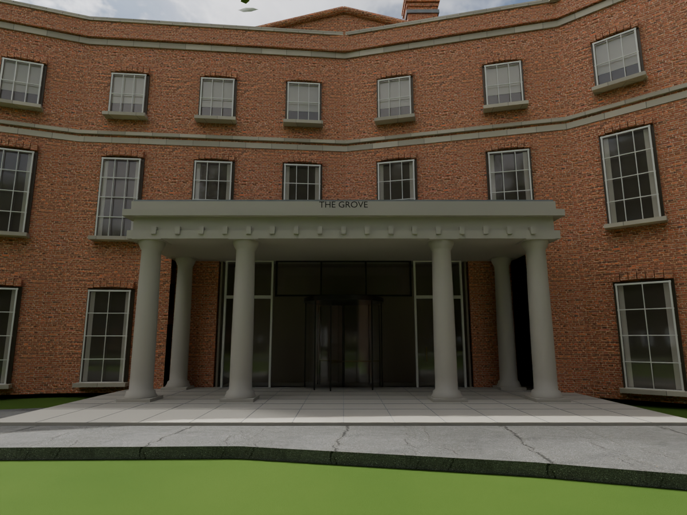
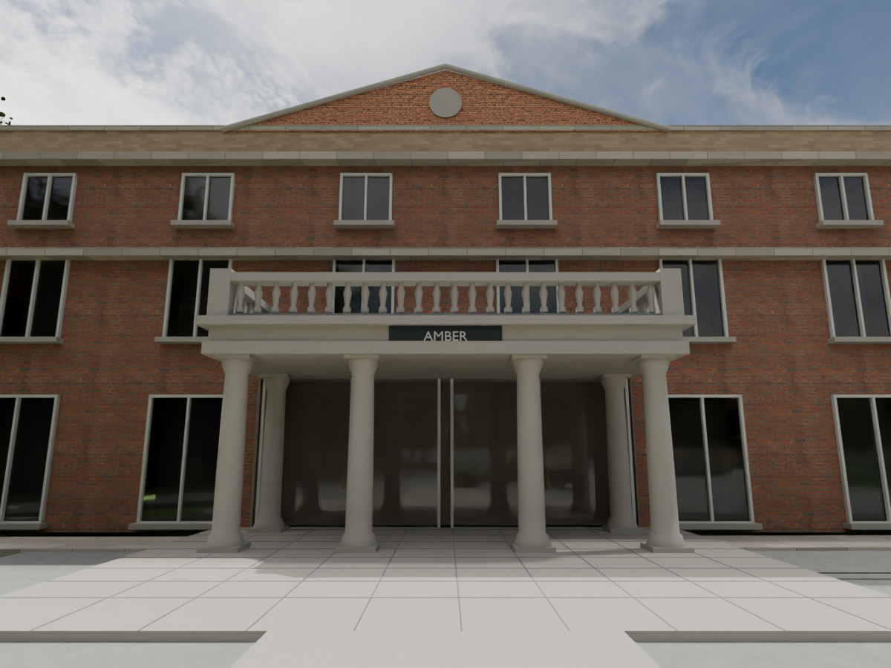
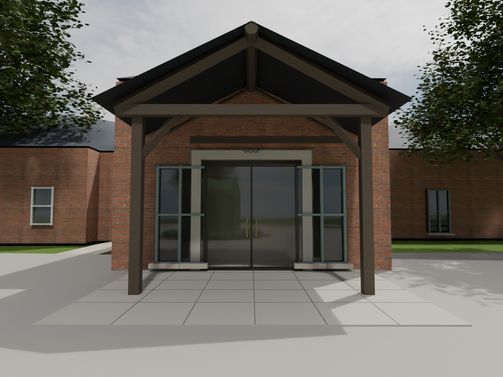
Revision 24 adds the front reception, Amber and Stables golf porch using the supplied photos. Proportions are estimates. This is not a complete inventory of every door.



These thirteen images predate the entrance corrections above.
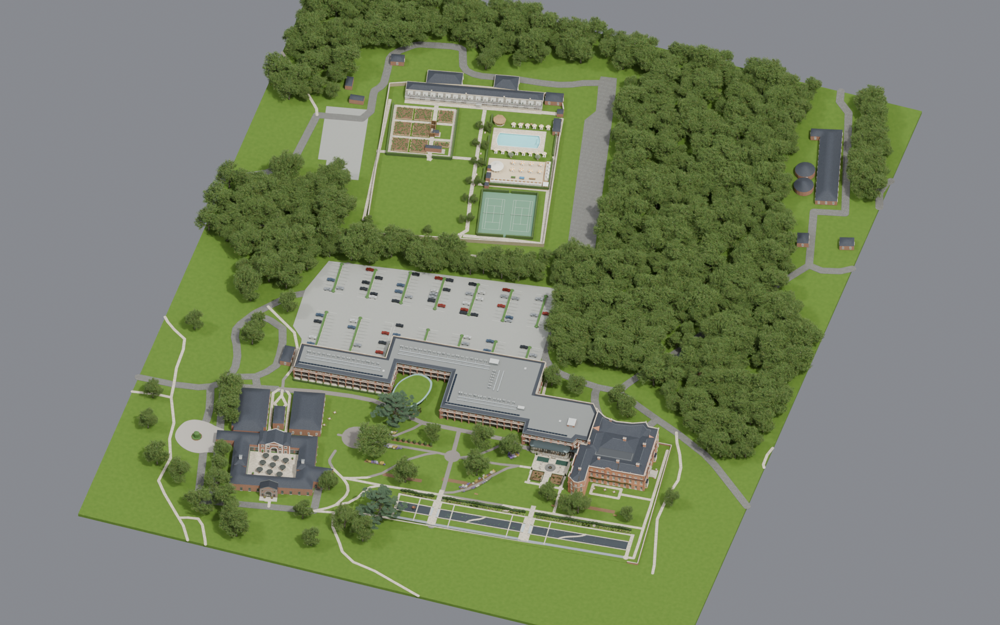
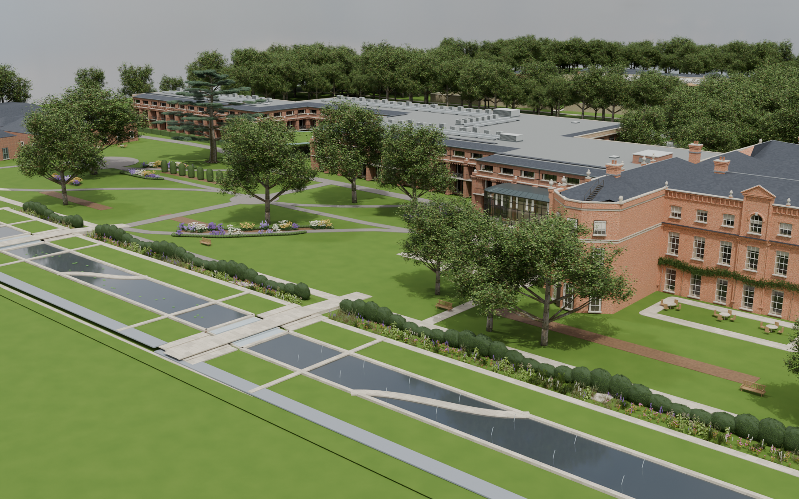
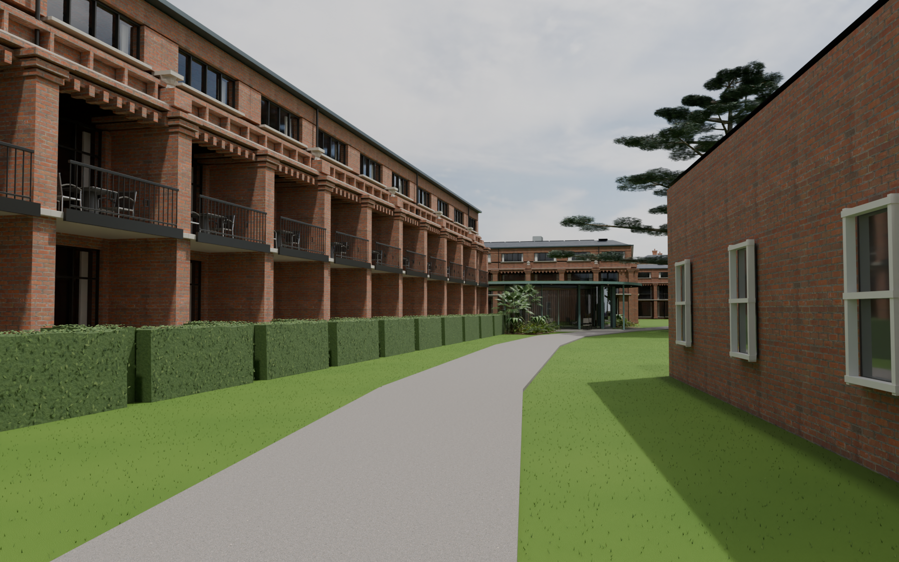
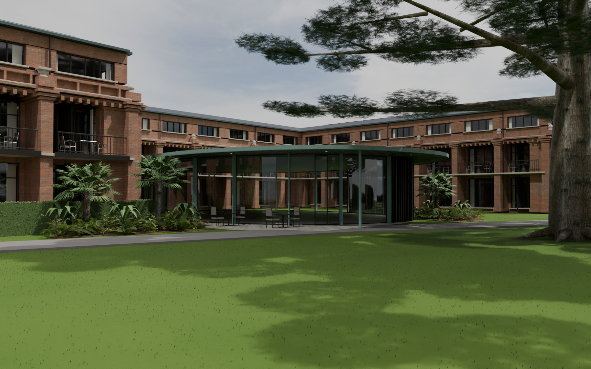
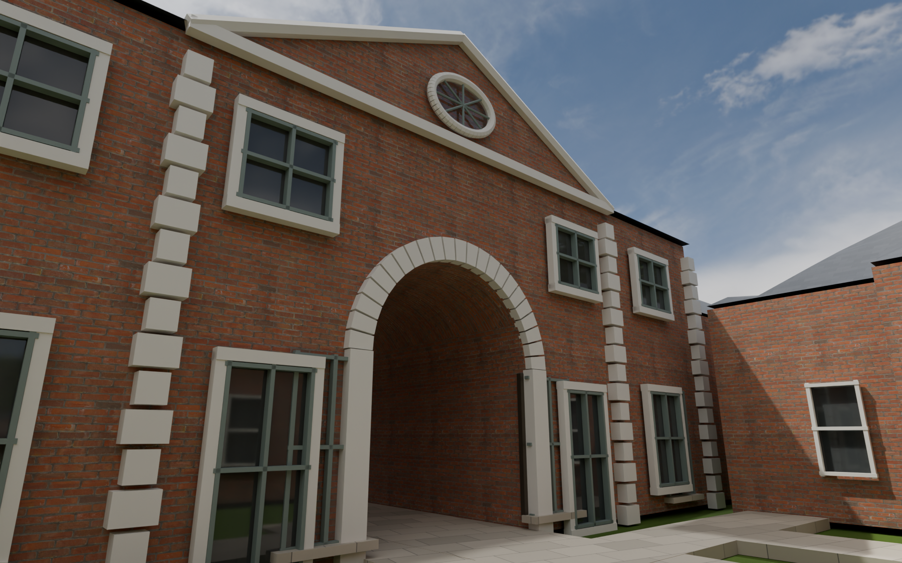
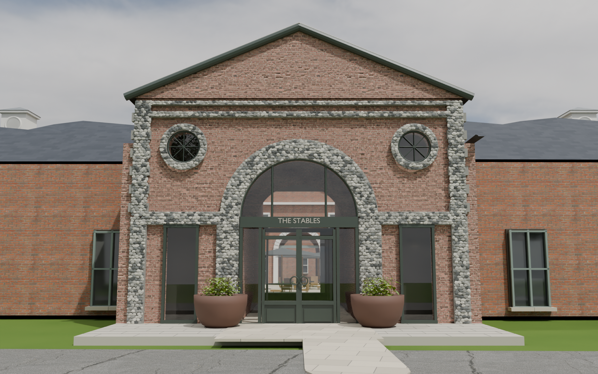
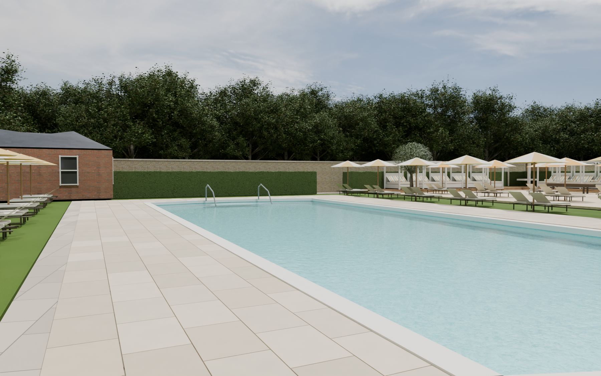
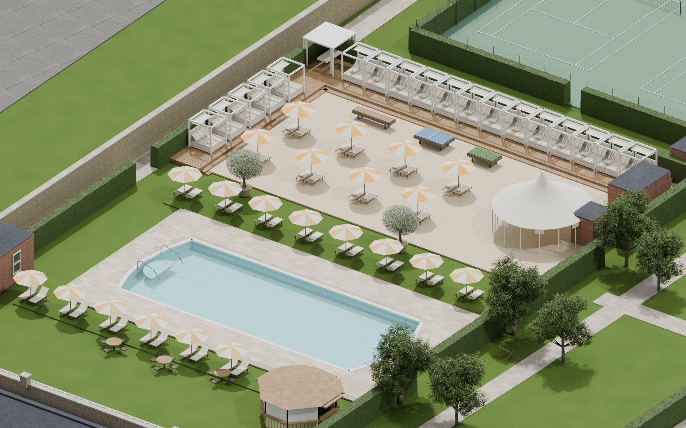
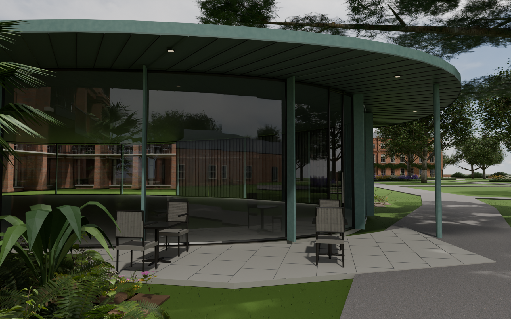
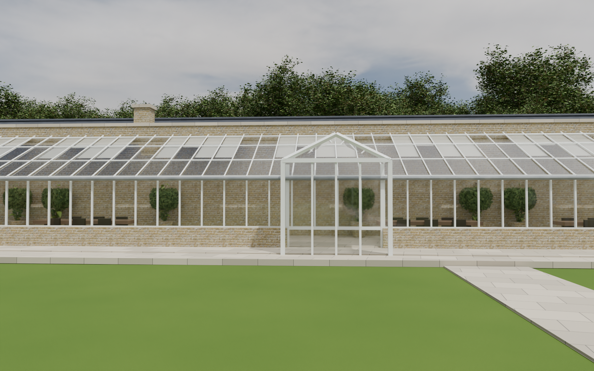
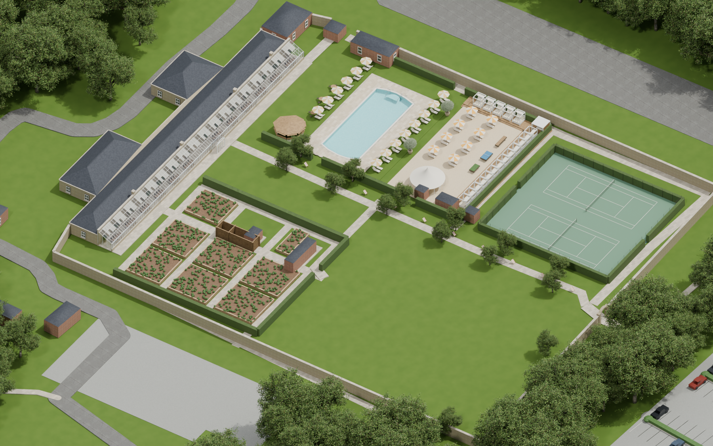
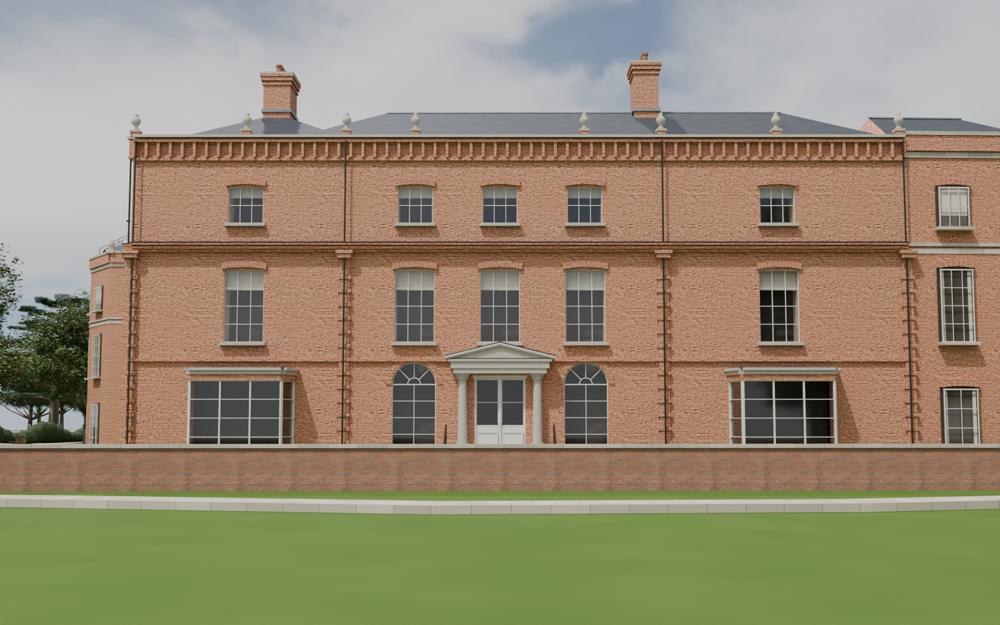
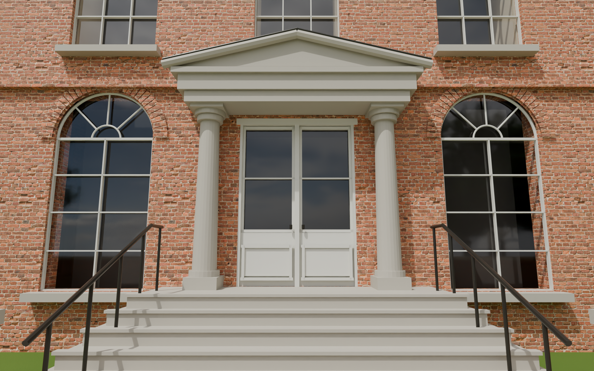